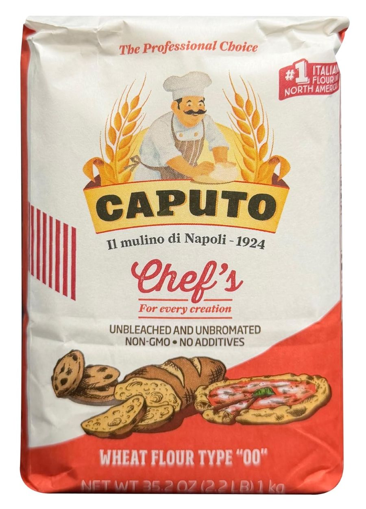
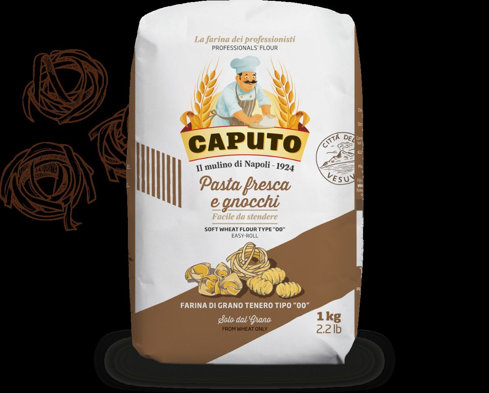

In the quest for intentional living, we often look at what we eat, but rarely do we look deeply at the molecular life of our ingredients. For those of us focused on the "Kitchen" and "Craft" pillars, flour is more than a powder; it is the foundation of our daily bread and pasta. However, not all wheat is created equal, and the Atlantic Ocean marks a significant divide in how this grain is grown, harvested, and processed.

A Tale of Two Wheats
The difference begins in the soil. In the United States, the majority of wheat grown is Hard Red Wheat, which is high in protein and gluten—ideal for the chewy structure of commercial sandwich bread. In contrast, Europe and Italy primarily grow Soft Wheat. This inherent biological difference means European flour is naturally lower in gluten, leading to a lighter, more digestible final product.
Beyond the genetics of the grain, the processing methods vary wildly. In the US, the FDA allows the use of chemical oxidizing agents like Potassium Bromate (to strengthen dough) and Azodicarbonamide. Both are banned in the European Union and many other countries due to health concerns. Furthermore, US wheat is frequently "bleached" with benzoyl peroxide to achieve a stark white color, a process largely absent in the traditional mills of Italy.
The "Vacation Paradox"
It is a common refrain on travel blogs and social media: "I ate pasta every day in Italy and came back thinner." While the increased movement of a Mediterranean vacation plays a role, scientists and nutritionists point to the glyphosate levels and processing differences as a factor. According to research cited by the Environmental Working Group, the practice of "pre-harvest desiccation"—spraying wheat with glyphosate to dry it faster—is much more common in the US than in Italy, where stricter regulations govern pesticide residue. When you remove these chemical stressors and lower the gluten load, the body often responds with less inflammation and better digestion.

Cooking with Intention: Adapting Your Recipes
When you make the switch to authentic Italian flour (such as a true "00" or Farina di Grano Tenero), you must adjust your "Rhythm" in the kitchen. Because Italian flour is more finely milled and has different absorption rates than American All-Purpose flour, your doughs will feel different. There are different brands of Italian flour; however, one of our favorites - and easiest to get on Amazon - is Caputo.
- Watch the Moisture: Italian flour often requires less liquid. If you are following an American recipe but using Italian flour, start with 10% less liquid than called for.
- The Texture Check: If your dough feels too sticky, add flour one tablespoon at a time. If it is crumbly and won't hold together, dampen your hands with water and continue kneading; the moisture from your palms is often enough to bridge the gap.
- Baking vs. Cooking: While "00" is the king of the pasta well, bread and pastry have their own requirements. For more on the use of flour in baking, visit our Baking page.
Deepen Your Knowledge
Learn more about the technical grades of Italian Flour from Caputo →